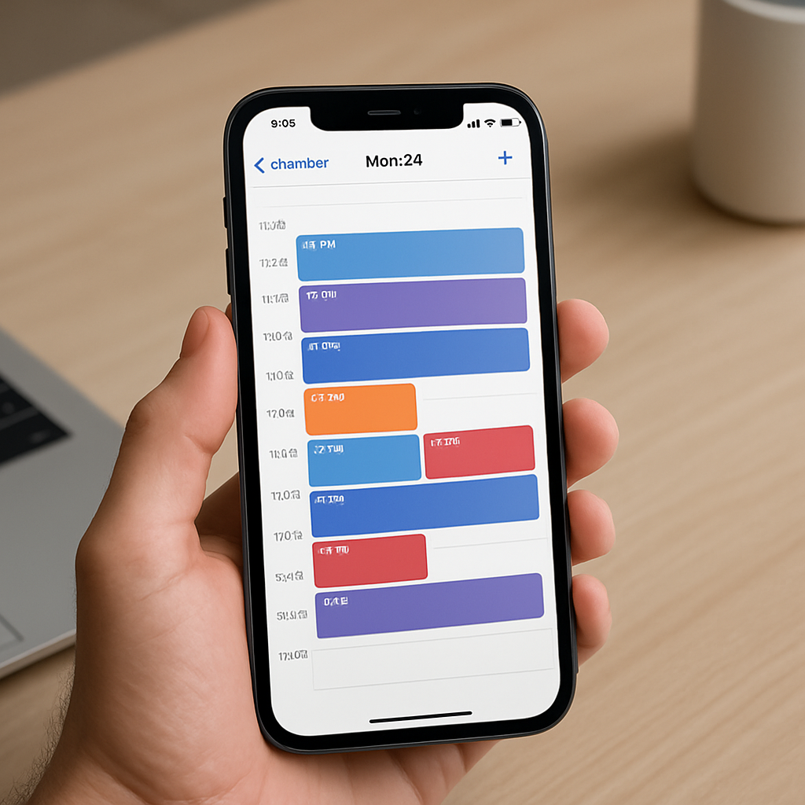
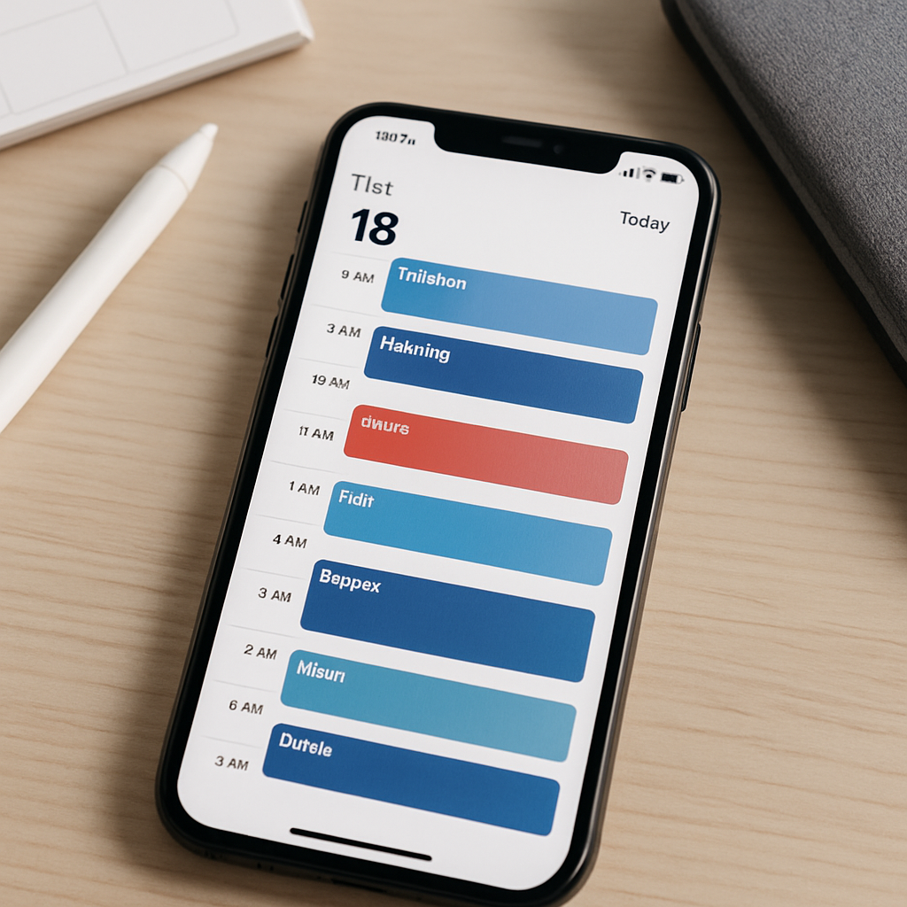

TL;DR
- The best calendar apps for time blocking on iPhone include Fantastical, TimeBloc, and Apple Calendar.
- These apps help maximize productivity by structuring your day with dedicated blocks for specific tasks.
- Common mistakes include not reviewing your calendar regularly or setting unrealistic time blocks.
- Use templates to streamline your time blocking process.
- Choosing the right app depends on your needs: budget-friendly, features, or collaborative options.
Scenario
Meet Sarah, a 28-year-old marketing manager who works in a fast-paced tech startup. She juggles multiple projects, meetings, and deadlines, often feeling overwhelmed. Sarah wants to improve her productivity by using time blocking on her iPhone. She has a tight schedule with work hours from 9 AM to 5 PM and needs to manage her personal commitments too. However, Sarah is constrained by the need to keep feedback channels open with her team, meaning she needs a solution that allows for easy collaboration.
Workflow
- Step 1: Identify your core tasks. Spend 15 minutes listing out your daily responsibilities.
- Step 2: Choose a calendar app that suits your needs based on the comparison below. Allocate 10 minutes to download and set it up.
- Step 3: Create time blocks. Spend 20 minutes assigning specific tasks to dedicated time blocks.
- Step 4: Schedule breaks. Allocate 5 minutes to insert short breaks between blocks to stay refreshed.
- Step 5: Review your calendar weekly. Spend 30 minutes every Sunday recalibrating your blocks for the week ahead.

Tool options
- Fantastical: Best for those needing advanced features like natural language input and powerful reminders.
- TimeBloc: Ideal for users focused on simplicity and a straightforward interface.
- Apple Calendar: Great for users who want a free, integrated solution but may need workarounds for more complex needs.
Quick comparison
| Option | Best for | Cost | Gotcha |
|---|---|---|---|
| Fantastical | Advanced features | $4.99/month | Can be overwhelming for beginners |
| TimeBloc | Simplicity | $3.99/month | Lacks advanced integrations |
| Apple Calendar | Free, integrated | $0 | Limited customizations |
Common mistakes
- Not prioritizing tasks when blocking time.
- Overestimating the time required for tasks.
- Failing to leave buffer time between blocks.
- Ignoring daily reviews of the calendar.
- Creating too many time blocks, leading to a cluttered schedule.
- Neglecting personal and leisure time in the blocking.
- Skipping breaks altogether to maximize productivity.

Templates
- Weekly Time Block Checklist: 1. Identify tasks 2. Allocate time 3. Include breaks 4. Review weekly
- Daily Time Block Template: 1. 9 AM - 10 AM: Project A 2. 10 AM - 10:15 AM: Break 3. 10:15 AM - 11:15 AM: Team Meeting 4. 11:15 AM - 12 PM: Emails
FAQ
- Q1: Can I use multiple calendar apps together?
- A1: Yes, but ensure they sync properly to avoid conflicts.
- Q2: How often should I review my time blocks?
- A2: At least once a week; a quick daily review can also be beneficial.
- Q3: What if I can’t fit everything into my time blocks?
- A3: Prioritize tasks and be flexible—consider the most urgent tasks first.
- Q4: Is there a free option that works well for time blocking?
- A4: Apple Calendar is free and effective for basic time blocking needs.